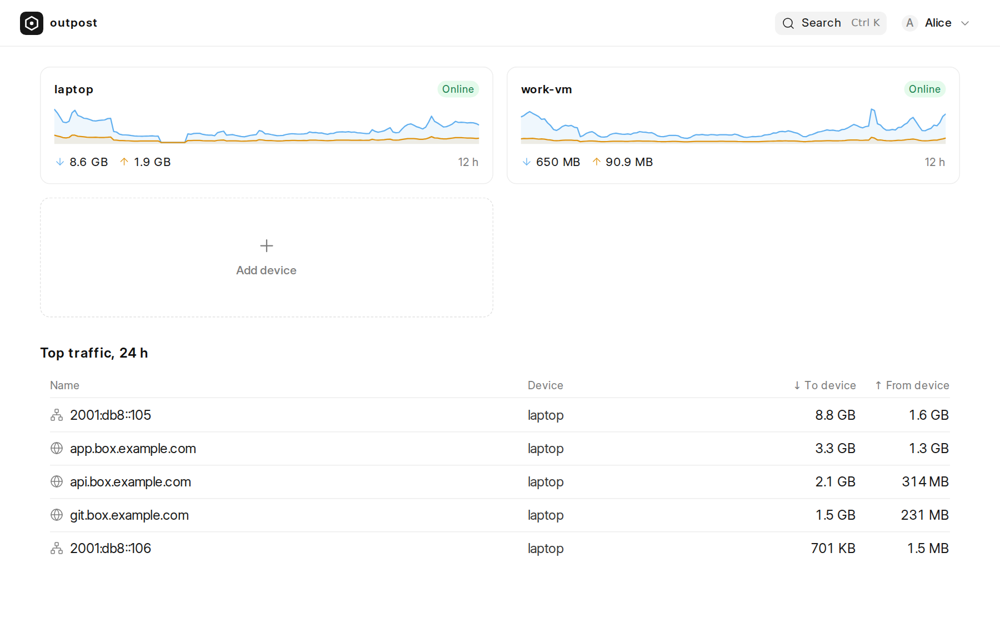
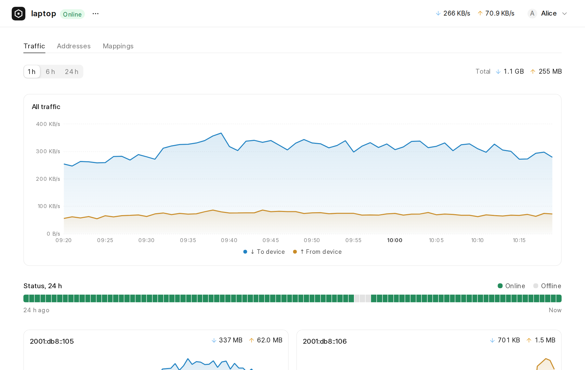
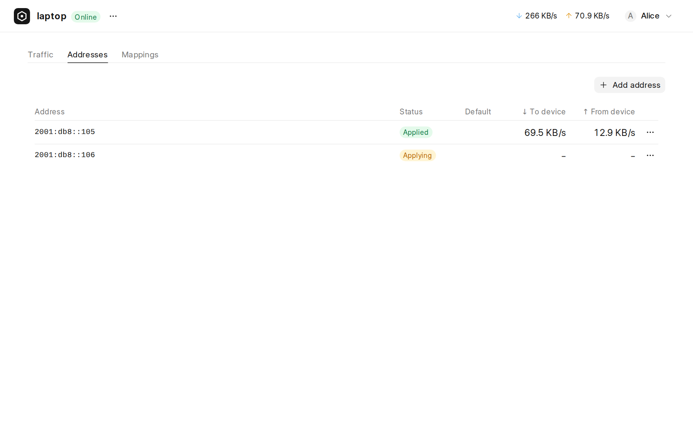
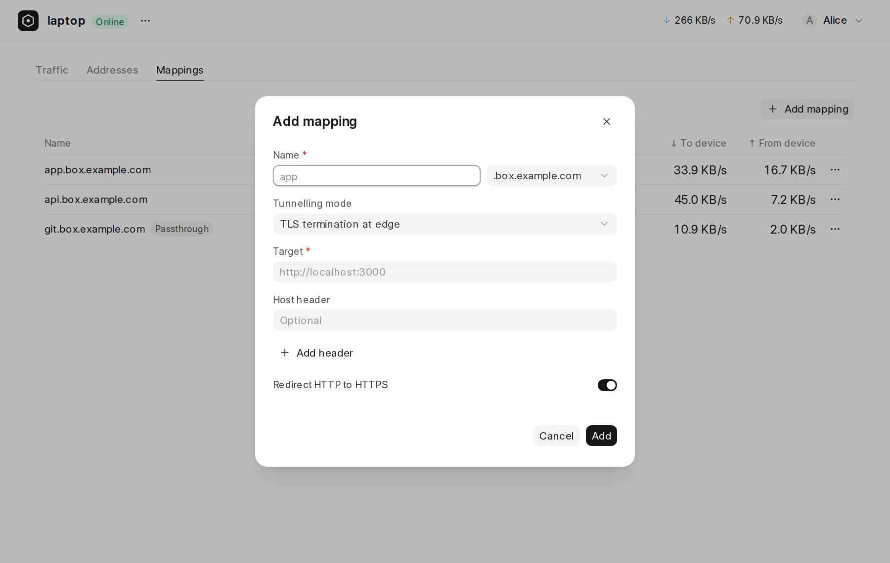
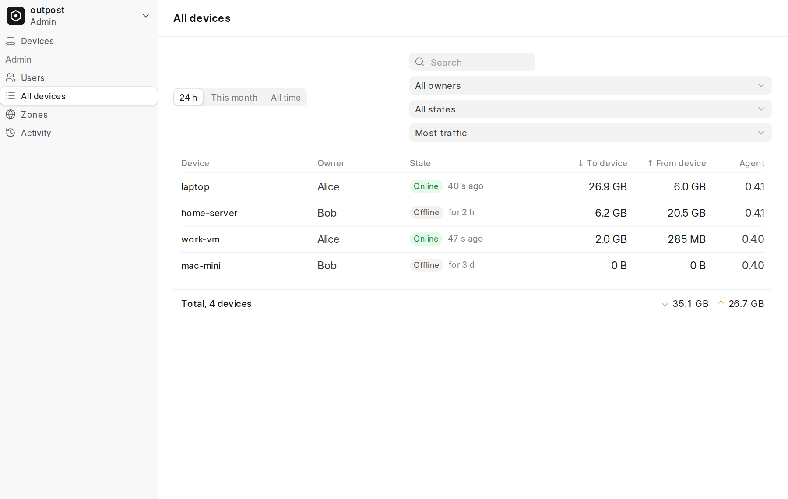
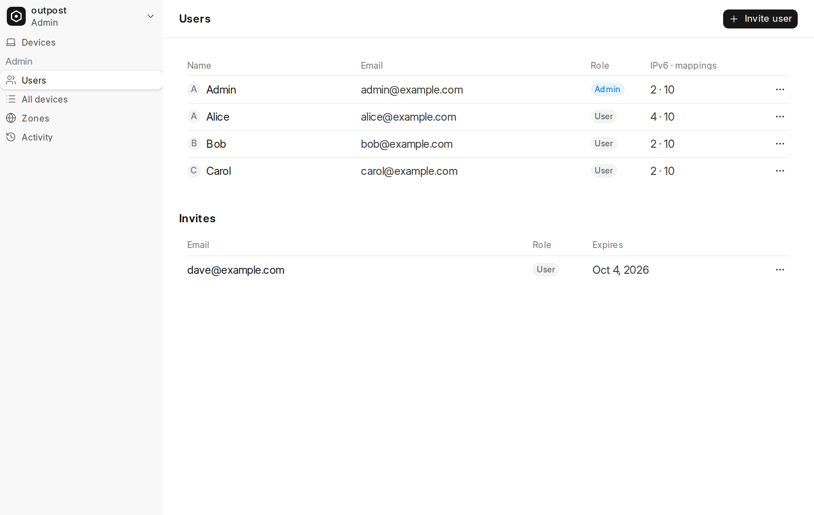
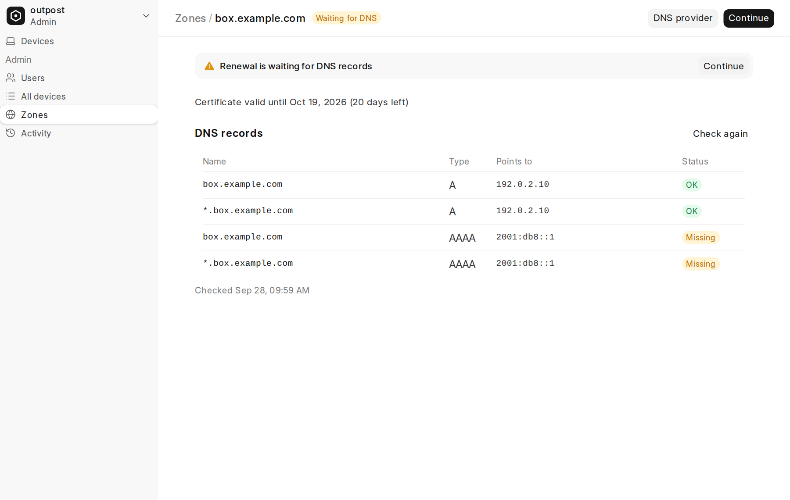
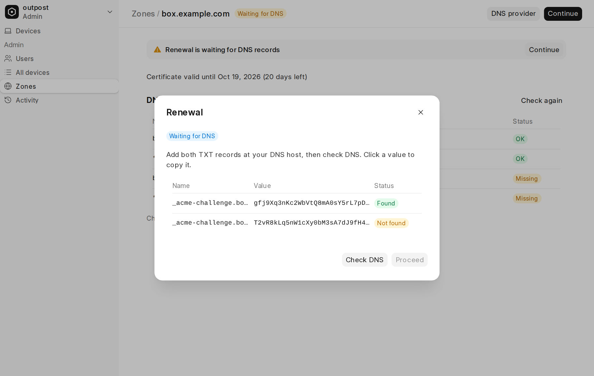
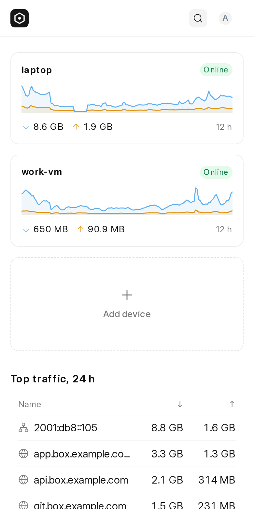
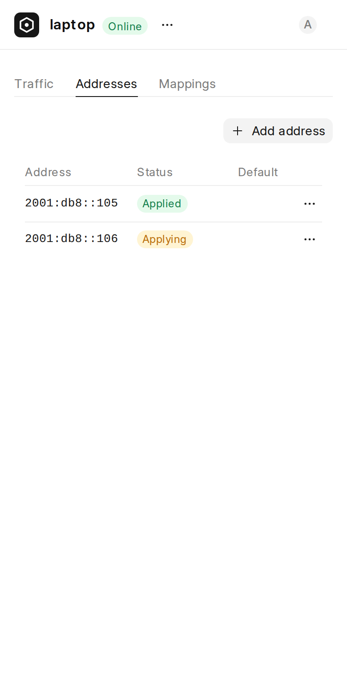

outpost: a self-hosted IPv6 and subdomain tunnel
A plan for one small server that gives each user public IPv6 addresses and public subdomains. The addresses and subdomains reach the user's own machine through an encrypted tunnel. One dashboard manages all of it.
1. The problem
A laptop or a home server usually has no public address. Other people on the internet cannot connect to it. Tools such as ngrok solve part of this problem, but they only forward web traffic, and they run on someone else's servers.
We have one cloud server. The provider gives it a small block of 16 public IPv6 addresses and routes all 16 to the server. We also control a domain, and every name under *.box.example.com points to the server.
The goal is to share these resources with a small group of invited users:
- Subdomains. A user maps
alice.box.example.comto a web service on their own machine, for examplehttp://localhost:8080. - IPv6 addresses. A user takes one address from the block. The address then appears on their own machine. Programs on that machine can receive connections on it and send traffic from it.
2. What we tested tested
The IPv6 feature depends on one fact: the provider must route the whole block to the server, and it must keep each packet's destination address. We tested this before we made the plan.
- Outbound. We sent traffic from each of the 16 addresses. An outside service reported the correct source address for all 16.
- Inbound, ping. Probes in 16 different networks sent pings to the 16 addresses. All pings got a reply. A packet capture on the server showed each packet with its own destination address.
- Inbound, without per-address setup. We removed the extra addresses and added one local route for the whole block. Pings still arrived with the correct destination. The server received no neighbour discovery requests. This shows that the block is routed to the server, not shared on a local network.
- Inbound, TCP. A test server on port 8080 read the destination address of each connection with
getsockname(). Sixteen outside probes connected, one to each address. All 16 returned HTTP 200, and each connection showed the correct destination address.
Result: the server can see which of the 16 addresses a client used. So it can forward traffic for each address to a different user.
3. Terms
- WireGuard
- An encrypted network tunnel. It carries whole IP packets over UDP. Linux runs it inside the kernel, so it uses little CPU.
- Agent
- The
outpostdprogram on a user's machine. It keeps the tunnel up and applies the settings from the dashboard. - Device
- One machine with an agent. A user can have more than one device.
- Tunnel address
- A private IPv6 address that each device gets inside the tunnel. The server uses it to reach the device.
- Zone
- A base domain, for example
box.example.com. Users choose one name under a zone. - Mapping
- A rule that connects one hostname to one service on one device.
- SNI
- Server Name Indication. The hostname that a browser sends in plain text at the start of a TLS connection.
- PROXY protocol
- A short header in front of a forwarded TCP connection. It tells the receiver the real address of the client.
- DNS-01
- A way to prove to a certificate authority that you control a domain. You publish a TXT record under
_acme-challenge.
4. Main decisions
| Question | Decision | Reason |
|---|---|---|
| Transport | WireGuard, one tunnel per device | The IPv6 feature must carry whole IP packets. WireGuard does this natively. Its overhead is about 60 bytes per packet, and the server runs it in the kernel. |
| Where settings live | Only in the dashboard | One source of truth. The agent has no local settings and no commands that change settings. |
| TLS | A wildcard certificate on the server, from DNS-01 | One certificate covers all user names in a zone. The server can apply headers and redirects. |
| End-to-end encryption | Optional, with direct mode for each mapping | Some users need the server to see only encrypted bytes. |
| Server and dashboard | One Go program with SQLite. The Vue dashboard is built into it. | Easy to deploy: one file and one service. |
| Sign-in | An admin sends an invite link. The user sets a password. | No external services are necessary. |
Transport options that we compared
| Option | Overhead per packet | Carries IP packets | Result |
|---|---|---|---|
| WireGuard | 60 bytes (IPv4 outside), 80 bytes (IPv6 outside) | Yes | Chosen. Lowest server CPU. |
| QUIC with datagrams (MASQUE, RFC 9484) | About 45–60 bytes | Yes, but complex | Good on networks that block UDP. It uses more server CPU. It is the best choice if we must replace WireGuard. |
| Streams over TCP (yamux, smux) | Small | Badly: TCP inside TCP stalls when packets are lost | Good for web traffic only. |
| 6in4, GRE | 20–40 bytes | Yes | No encryption. Does not pass NAT. Not good for laptops. |
5. How the parts fit
There are three parts. The dashboard stores the settings. The server receives traffic from the internet. The agent on each device receives traffic from the server through the tunnel.
Who owns which data
| Data | Fields | Managed by |
|---|---|---|
| User | email, password hash, role, quotas | Admin |
| Zone | base domain, DNS provider (Cloudflare, Route53 or manual), credentials, certificate state | Admin |
| Device | name, owner, WireGuard public key, tunnel address, last seen | User |
| IPv6 address | address (allocated automatically) → one device. A device can have more than one address. Switch: allow inbound (on by default). | User: add, release |
| Device outgoing | none (default), or one of the device's addresses | User |
| Mapping | name + zone → device; mode; the fields for that mode | User |
6. One request, from start to end
Alice maps alice.box.example.com to http://localhost:8080 on her laptop. The mapping uses proxy mode, which is the default. A visitor opens https://alice.box.example.com/.
- DNS returns the server address, because
*.box.example.compoints to the server. - The browser connects to the server on port 443. It sends the name
alice.box.example.comas SNI. - The server reads the SNI and finds Alice's mapping. The mapping says: device "laptop", proxy mode.
- The server completes TLS with the wildcard certificate for
*.box.example.com. - The server opens a connection to the laptop's tunnel address on port 7080. This connection goes through WireGuard, so it is encrypted on the network.
- The server sends a PROXY v2 header first. The header holds the visitor's address and the mapping ID. Then it sends the HTTP request with
X-Forwarded-ForandX-Forwarded-Proto: https. - The agent reads the mapping ID. It applies the host override and extra headers from the mapping. Then it sends the request to
localhost:8080. - The response goes back along the same path.
If the laptop is offline, the server shows a "device offline" page with status 502. If the name has no mapping, the server shows a 404 page.
7. Proxy mode and direct mode
Each mapping has a mode. In both modes, the server first reads the hostname. On port 443 it reads the SNI. On port 80 it reads the Host header. The server keeps the bytes that it read and sends them on unchanged. The mode then decides the next step.
| Proxy (default) | Direct | |
|---|---|---|
| Port 443 | The server decrypts TLS and forwards HTTP to the agent. | The server forwards the raw TCP stream. The service decrypts TLS itself. |
| Port 80 | Serve the site, or redirect to HTTPS. The user chooses. | Raw forward to an optional HTTP target. If there is no target, redirect to HTTPS. |
| Visitor address | X-Forwarded-For header | PROXY protocol v1 or v2, if the user turns it on. Otherwise none. |
| Host override, extra headers | Yes | No |
| Protocols | HTTP/1.1, HTTP/2, WebSocket | Any TLS protocol that sends SNI, for example gRPC over TLS |
| Server sees plain text | Yes | No |
The hop from server to agent is the same in both modes. The server always sends a PROXY v2 header first. The header holds the visitor's address and two custom fields: the mapping ID and the original port. The agent accepts this header only on the tunnel interface. In direct mode, the agent then removes the header. It sends a new PROXY header to the service only when the user turns that option on.
Certificates in direct mode are the user's job. The private key of the wildcard certificate never leaves the server. The service can get its own certificate with ACME. TLS-ALPN-01 works because the server forwards the TLS handshake unchanged. HTTP-01 works when the mapping has an HTTP target.
8. Certificates
Each zone gets one certificate for *.box.example.com and box.example.com. A wildcard certificate needs DNS-01. The certificate authority asks for a TXT record at _acme-challenge.box.example.com. The certificate has two names, so it needs two TXT values on the same name.
Each zone uses one of three DNS providers:
- Cloudflare or Route53. The server writes and removes the TXT records through the provider's API. Issue and renewal are automatic.
- Manual. The dashboard shows the two TXT values. The admin adds them at their DNS provider. Then the admin clicks Check DNS and Proceed.
- Libraries.
mholt/acmezfor ACME,libdns/cloudflareandlibdns/route53for DNS. One low-level state machine covers the automatic and manual cases. - Before validating. The server checks that both TXT values are visible on the zone's own name servers and on public resolvers. It waits up to 5 minutes.
- Renewal. The server checks every 12 hours. It renews when the CA's renewal information (ARI) says so, or 30 days before expiry. For a manual zone, it starts a new order and shows "Action needed". Warnings show at 30, 14 and 7 days. The old certificate stays in use until the new one is issued.
- Provider zone. The outpost zone
box.example.comis often inside a larger DNS zone,example.com. The server finds the DNS zone with an SOA lookup and writes the relative name_acme-challenge.box. - Credentials. Stored encrypted with AES-GCM and a key file on the server. A Test button creates and removes a test TXT record. It also shows when the API token expires.
- Staging. Each zone has a switch to use the Let's Encrypt staging server first, so tests do not use the real rate limits.
- Only one name level. A wildcard covers one level only:
alice.box.example.comworks,api.alice.box.example.comdoes not. For deeper names, the admin addsalice.box.example.comas a separate zone.
Cloudflare: the box and *.box records must be "DNS only". If Cloudflare proxies them, it decrypts TLS itself, and direct mode stops working. The zone check warns about this.
9. IPv6 on the user's machine
Add and release
An address is always on one device, and it stays on that device. There is no reserved address without a device, and no move between devices. To use an address on another device, release it and add a new one there.
- Add. On the device page, the user clicks Add address. The server picks the address; the user cannot choose it. The server gives the lowest free address. There is no promise to get the same address again: after a release, the address can go to any user at once. A device can have more than one address.
- Release. The address goes back to the pool at once, after a plain confirmation.
The server sends each address into the tunnel of its device. The WireGuard peer for a device allows two kinds of address: the device's tunnel address, and each public address of the device. The server adds one route for each address.
Release is immediate. On release, the server removes the address from the device's peer and deletes its route. WireGuard drops a packet from a peer if the source address is not allowed for that peer. So the device cannot use the address after the release, even when it is offline and still has the address. Its agent removes the address at the next connection. If the address was the device's outgoing address, that setting goes back to None.
On the device
For each of its addresses, the agent does three things:
- It adds every address to the device. The agent adds each address to its tunnel interface. It also adds a rule: traffic from this address uses the tunnel. So a program that binds to the address always sends through the server.
This does not change other traffic. Linux selects a source address on the interface that sends the packet. So programs that do not bind to an outpost address continue to use the normal network.ip -6 addr add 2001:db8::105/128 dev outpost0 ip -6 rule add from 2001:db8::105 lookup outpost ip -6 route add default dev outpost0 table outpost - It does not change outgoing traffic, unless the dashboard says so. Each device has one setting, Outgoing IPv6. The default is None. With None, outpost adds no default route, so it cannot interrupt other traffic. The user can select one of the device's addresses in the dashboard. Then the agent makes the tunnel the default route for all IPv6 traffic, with that address as the source. The tunnel itself connects over IPv4, so it cannot send its own packets into itself. The agent records the old routes and puts them back when the setting goes back to None.
- It accepts inbound connections. Inbound traffic to an address is allowed by default. The user can turn off allow inbound for one address. Then the server firewall drops new connections from the internet to that address. Replies to the device's own connections still arrive.
Stopping outpost on the device
Any person with admin rights on the device can stop outpost without the dashboard:
outpostd downremoves all addresses, rules and routes that outpost added, and closes the tunnel. Outpost stays down after a reboot, until someone runsoutpostd up.systemctl stop outpostddoes the same cleanup. But the service starts again at the next boot.- After a crash, the agent cleans up the old state when it starts again.
The dashboard then shows the device as Paused on device, not Offline. Changes from the dashboard wait until the device is up again.
The block has 16 addresses. The server uses one, so 15 are free for users. Addresses count against the owner's quota. The data model allows more address pools later.
10. Adding a device
- In the dashboard, the user clicks Add device and types a name.
- The dashboard shows an install command with a one-time token. The token is valid for 15 minutes.
curl -fsSL https://box.example.com/install.sh | sudo sh -s -- <token> - The agent installs itself as a system service. It makes a WireGuard key pair on the machine. The private key never leaves the machine.
- The agent sends the token and the public key to the server. The server returns a long-term device credential and the tunnel settings. The token is now used and no longer works.
- The dialog in the dashboard changes to "Connected" as soon as the agent enrolls.
After this, the server pushes the full settings to the agent through a server-sent events stream whenever something changes. The agent compares the settings with the real state of the machine, and it fixes any difference. Every 30 seconds it reports its status: which settings version it applied, and any error. The dashboard shows the device as Offline when no report arrives for 90 seconds. There is no health check for each mapping. If a target is down, visitors get the server's 502 page.
The agent has six commands: outpostd setup <token>, outpostd status, outpostd logs, outpostd down, outpostd up and outpostd uninstall. None of them change settings; settings come only from the dashboard. When an admin or user revokes a device, the server removes its tunnel peer at once. It releases the device's addresses and deletes its mappings.
11. Traffic and device health
Users want to see how much traffic goes through each device, each address and each mapping. They also want to see if a device is up. This section explains what the server counts, where it keeps the numbers, and what the dashboard shows.
What the server counts
All counting happens on the server. The agent counts nothing, so it stays small. The direction is always from the device's side: ↓ to device and ↑ from device.
| Series | Source | Values |
|---|---|---|
| Device total | The byte counters that WireGuard keeps for each peer (read with wgctrl) | ↓ bytes, ↑ bytes |
| IPv6 address | Kernel nftables counters, one for each address and direction | ↓ bytes, ↑ bytes |
| Mapping, proxy mode | A counter around each connection in the server edge | ↓ bytes, ↑ bytes, requests, 2xx, 3xx, 4xx, 5xx |
| Mapping, direct mode | The copy loop in the server edge. It adds to the counter while it copies, so long connections show a live rate. | ↓ bytes, ↑ bytes |
Every 10 seconds, the server reads all counters. It uses the difference from the last reading to calculate the live rate, and it sends that rate to open dashboards. It does not store the 10-second values. Every minute, it stores one point for each series.
Where the numbers go
- Memory: the last 6 hours only. Each series has a ring buffer of 360 one-minute points. For 200 series this is about 1.5–2 MB.
- Disk: one JSON line each minute. The line holds all series, so the server does one small append each minute. A new file starts every hour.
/var/lib/outpost/metrics/2026-09-28T14.jsonl {"t":1790604000,"s":{"dev:3":[1048576,20480],"addr:7":[5120,900],"map:12":[830000,4100,52,50,0,1,1]}} - Retention: 24 hours by default. To remove old data, the server deletes whole hourly files. Nothing needs compaction. 200 series use about 9 MB of disk each day.
- Reads. Charts for 1 hour and 6 hours come from memory. A 24-hour chart also reads the older hourly files, only when a user opens it. The server shows it in 5-minute steps and caches the result for 60 seconds.
- Restart. The server rebuilds the 6 hours in memory from the latest hourly files. If a crash cut the last line, the server skips that line.
- SQLite gets only the totals for each month and for all time, once a minute.
We compared three stores for the one-minute points. SQLite works, but deleting old rows every day leaves empty space that needs a vacuum. A single JSON log with no memory copy must be read and parsed for every chart. Memory for recent data plus hourly JSON files for older data gives fast charts, very few writes and easy deletion.
Memory limits
outpost(server): less than 60 MB with 20 devices and 200 series.outpostd(agent): less than 20 MB on Linux with kernel WireGuard, and less than 40 MB with the built-in WireGuard on macOS and Windows.- Both services set
GOMEMLIMIT. A CI test runs 100 connections, records the memory use and fails when a service is over its limit.
Device health
The dashboard shows health for devices only. It does not check each mapping.
- State. Online, Paused (someone ran
outpostd down) or Offline (no status report for 90 seconds). - Details. Time since the last WireGuard handshake, the agent version, and whether the agent applied the latest settings. If it could not apply them, the dashboard shows the error.
- History. A 24-hour status bar for each device. The server stores the state with the traffic points.
- Mappings. A mapping has no health state. If its target is down, visitors get the 502 page. The status-code counts of proxy mappings then show the errors.
- Server health (admins). Certificate expiry, the DNS check, whether
wg0is up, free disk, pool use, and the time of the last metrics write.
Delete and release
We keep these actions simple. There is no "keep reserved" choice.
- Delete a device. Admins only. The dialog says that the server releases its addresses and deletes its mappings. The admin types the device name to confirm. A user can disable their device instead.
- Release one address. A plain confirmation. If it was the default outgoing address, outgoing IPv6 goes back to the device's own route.
- Delete a mapping. A plain confirmation. The name becomes free.
12. Dashboard
The dashboard is a Vue 3 app with TypeScript and the frappe-ui component library. It is built into the Go server. It runs on the zone's own name, box.example.com, which the certificate already covers.
- Data.
@tanstack/vue-queryloads and caches data. One server-sent events stream tells the page when data changes, for example when a device goes online. - Types.
tygomakes TypeScript types from the Go API types, so the front end and the back end stay the same. - Access. The server enforces all rules. A user sees only their own devices, addresses and mappings. Only admins see all devices and their addresses.
- Security. User services run on sibling names under the same domain, so SameSite rules do not isolate the dashboard from them. The session cookie uses the
__Host-prefix, so no sibling name can set or replace it. The CSRF token is stored on the server with the session. There is a strict content security policy, and the dashboard cannot be framed.
| Page | What it does |
|---|---|
| Home (Devices) | A card for each device: name, state (Online or Offline), a 12-hour sparkline and the 12-hour ↓ and ↑ totals. A dashed card adds a device. An alert shows the next setup step for a new user. A strip shows only real problems. Search (⌘K). Top traffic in the last 24 hours. |
| Device page | The name, the state and a ⋯ menu are in the top bar. The menu has Disable or Enable. Admins also get Rename, Get command and Delete device. There is no Settings tab. |
| Device: Traffic tab | A 1 h / 6 h / 24 h switch. A rate chart for the device total, a 24-hour status strip, and a small chart for each address and each mapping. Totals for the range. |
| Device: Addresses tab | A list: address, status (Applied, Applying or Error), default, ↓ and ↑. A click on an address copies it. The ⋯ menu has Set as default or Remove default, and Release. Add address asks for a confirmation. Each address allows traffic in both directions. |
| Device: Mappings tab | A list: name, target, ↓ and ↑. A click on a name copies it. The ⋯ menu has Edit and Delete. The form is a dialog: name and zone, Tunnelling mode (TLS termination at edge, or TLS passthrough), target, headers and a Redirect HTTP to HTTPS switch. To stop a mapping, delete it. |
| Account | Name and email with Change password on the same line. The signed-in browsers, each with Sign out in its ⋯ menu. |
| Admin: users | A list of users (role, IPv6 and mapping quotas) with Edit, Disable and Delete in the ⋯ menu. Open invites, with Copy link and Delete. There is no device limit. |
| Admin: all devices | One list of all devices: owner, state, ↓ and ↑ totals for 24 hours, this month or all time, and agent version. Search, owner, state and sort filters, and a total row. |
| Admin: zones | A list of zones. The zone page shows the certificate end date, an alert when a renewal needs action, and a list of DNS records. DNS provider and the renewal steps open in dialogs. |
| Admin: activity | Who changed what, and when. |
13. Screen layouts built
These screenshots show the dashboard as it is built. They use the demo data, so all names and addresses are example data. The dashboard uses frappe-ui 1.0 components: a sidebar, lists, tabs, dialogs, badges and form controls.
The dashboard is device-first. Addresses and mappings are tabs on each device page. Only admins get the sidebar. Other users get a top bar with the logo and a user menu. An action on a list row is in the row's ⋯ menu.
13.1 Home

13.2 Device page: Traffic tab

13.3 Device page: Addresses tab

13.4 Device page: Mappings tab

13.5 Admin: All devices

13.6 Admin: Users

13.7 Zone page


13.8 On a phone


On a phone, the cards are in one column, and the lists show fewer columns. The rates move to the Traffic tab.
14. Build order in progress
Each milestone depends on the one before it. The last column shows the status on 28 September 2026.
| # | Milestone | Contents | Status |
|---|---|---|---|
| 1 | Core and devices | Server, database, invites and passwords, device cards, enrollment, WireGuard manager, settings push, outpostd status. Metrics: sampler, memory buffer, hourly files, device totals and health. | Built. Checked in isolated network namespaces. |
| 2 | Zones and TLS | Zone page, encrypted credentials, certificate state machine. Manual, Cloudflare and Route53 providers. Renewal. Dashboard over TLS. | Built. Checked against Pebble. Let's Encrypt staging and production are not done yet. |
| 3 | Mappings | Mappings tab and form. TLS termination at edge and TLS passthrough, SNI reading, PROXY headers, byte counters. | Built. Checked through a real WireGuard tunnel. |
| 4 | IPv6 | Automatic allocation, add and release, the default outgoing address, counters and cleanup. The Addresses tab. | Built. The public test on the server is not done yet. |
| 5 | Hardening | Activity log, quotas, metrics and retention are built. WireGuard over WebSocket, macOS and Windows support, and long load checks are not done yet. | In progress. |
outpost/
cmd/outpostd/ device agent: setup, status, logs, down, up, uninstall
cmd/outpost/ server: API, dashboard, edge, WireGuard, certificates
internal/api/ shared types: Enroll, DeviceConfig, DeviceStatus
internal/server/ http, auth, store, alloc, wgmgr, push, firewall, edge, acme, dnsprov, secrets
internal/agent/ enroll, reconcile, tunnel, netcfg, edge, status, ctl
web/ Vue dashboard, built into the server binary
deploy/ systemd unit, nftables template, install.sh15. How we check success
Unit tests
- The certificate state machine against Pebble, a local ACME test server, with a fake DNS provider and a fake Proceed click. This includes two TXT values on one name and a restart in the middle of an order.
- SNI reading on real TLS handshakes from Go, curl and Chrome, including handshakes split over several TCP packets. The bytes that the server sends on must be identical to the bytes it read.
- PROXY v1 and v2 headers, including the custom fields.
- The address allocator never gives one address twice. It gives the lowest free address, and a released address is free again at once. Release removes the address from the peer at once. Names are unique in a zone. Enroll tokens work once and expire.
Traffic and health tests
- Send a 100 MB file through a proxy mapping, a direct mapping and an address. Each series shows about 100 MB, in the correct direction.
- Keep a direct connection open for 5 minutes. The chart shows a live rate for the full time.
- Restart the server. The chart history is still there, with a gap of about one minute at most. A 24-hour chart shows data older than 6 hours from disk.
outpostd downshows Paused.kill -9on the agent shows Offline after 90 seconds.- Memory stays below the limits under a 100-connection load test.
Integration tests
Two Linux network namespaces, one for the server and one for a device, with a real WireGuard link between them. Create a mapping through the API. Check that the agent applies it, and that curl --resolve gets the service's reply. Switch the mapping to direct mode. Check that openssl s_client shows the device's certificate, not the wildcard. With PROXY protocol on, check that nginx logs the real client address.
End-to-end on the real server
- Outside HTTP probes to
https://andhttp://names return 200 from a service on a device. - After a release, probes to the address stop reaching the device in a few seconds, and the device cannot send from it, also while it is offline.
- Probes to each address reach the device, and
getsockname()shows the same address. This repeats the test in section 2, but through the tunnel. - With Outgoing IPv6 set to None, the routing table and a plain
curl -6 https://api64.ipify.orggive the same result as before outpost was installed. - With one address selected, the same
curlreturns that address. When the setting goes back to None, the old route comes back in a few seconds. - After
outpostd down,systemctl stop outpostd, or a crash and restart, the addresses, rules and routes are the same as before outpost was installed.
16. Limits and risks open
- UDP blocked. WireGuard uses UDP. Some networks block it. Milestone 5 adds a fallback over WebSocket on port 443.
- Small pool. Only 15 addresses are free for users. Quotas limit how many each user gets. More pools need a second provider or a larger block.
- Plain text in proxy mode. The server can read proxied HTTP. Users who need privacy must use direct mode.
- SNI is needed. Direct mode needs a client that sends SNI. All modern clients do. We will not publish Encrypted Client Hello (ECH) settings, because ECH hides the SNI.
- Manual zones need a person. Every renewal needs new TXT values. If nobody adds them, the certificate expires. The dashboard warns 30 days before.
- API token expiry. If the DNS API token expires before a renewal, automatic renewal fails. The dashboard warns about this.
- Open by default. Inbound traffic is allowed by default, so a service that listens on all addresses of a device is open to the internet on its outpost addresses. The user must turn off allow inbound or use a local firewall to prevent this.
- Abuse. Traffic from user addresses comes from our server block. Complaints go to the server owner. Quotas and the audit log help, but they are not a full answer.